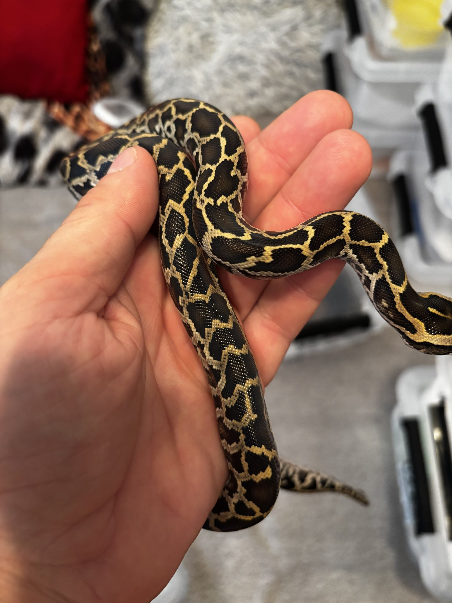
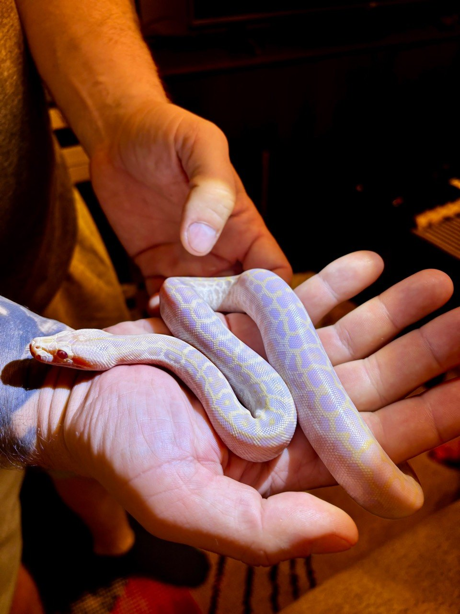
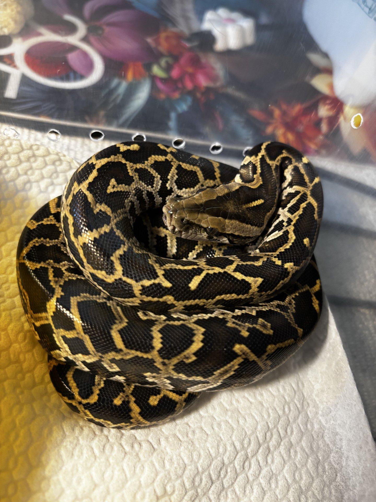
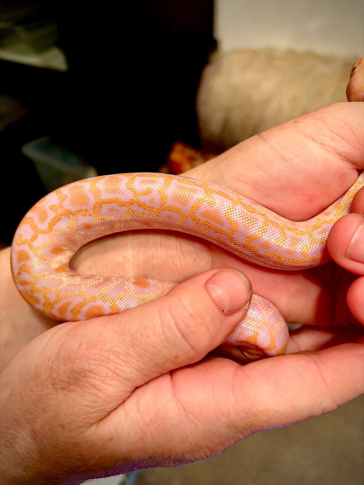
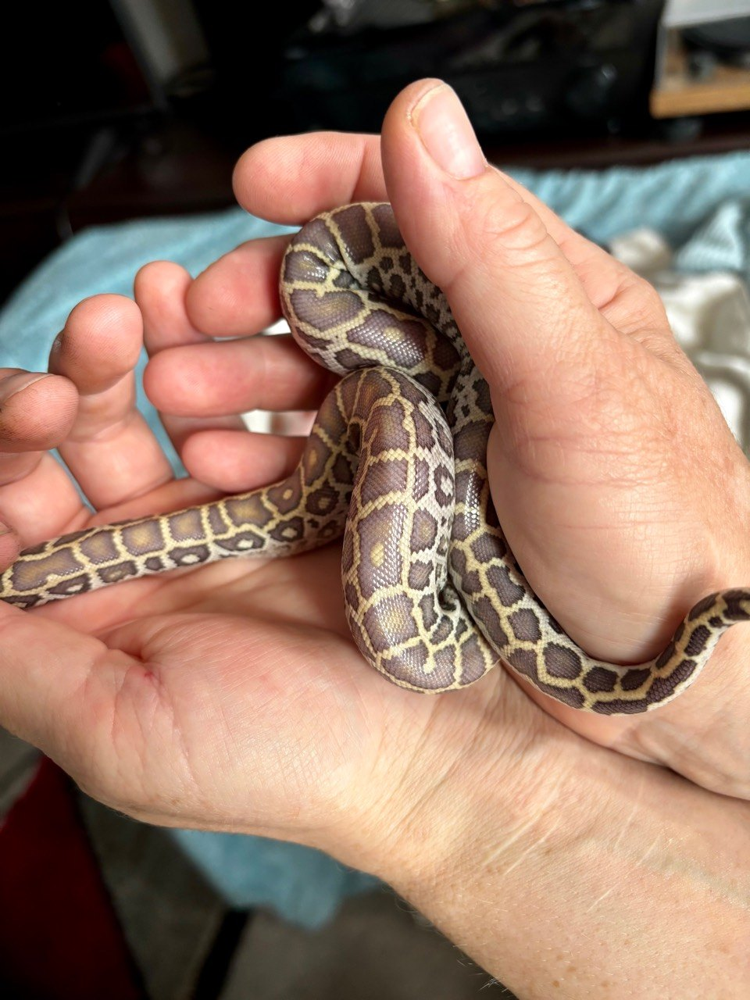
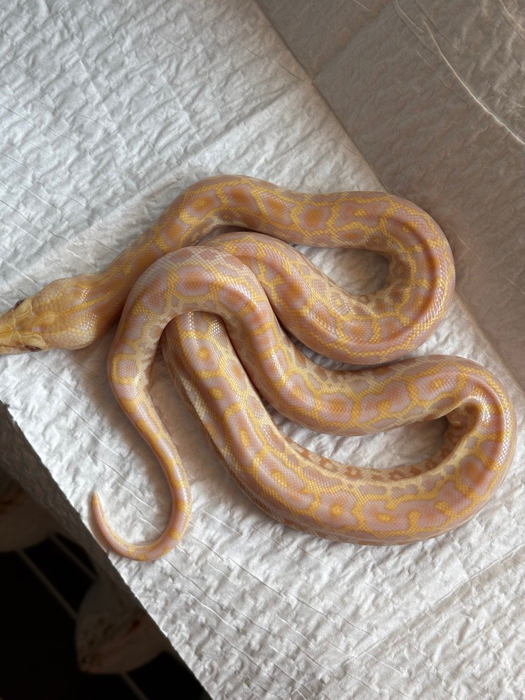
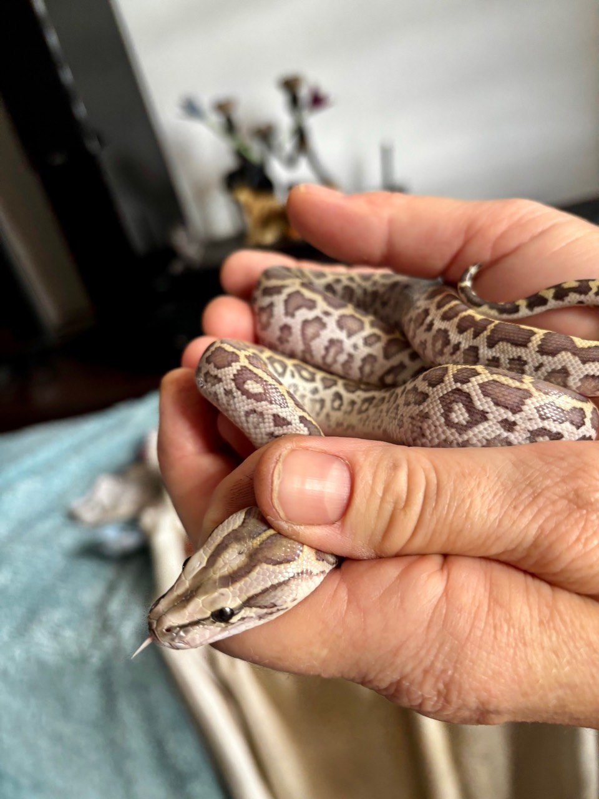

NAJWAŻNIEJSZA ZASADA
Morph nie jest nazwą koloru ze zdjęcia. Jest utrwalonym fenotypem, którego dziedziczenie powinno wynikać z powtarzalnych kojarzeń, a najlepiej także z identyfikacji wariantu DNA. U wielu odmian pytona birmańskiego znamy wiarygodny schemat dziedziczenia, lecz nie znamy jeszcze konkretnej zmiany molekularnej.
Fenotyp można zobaczyć. Genotyp trzeba udokumentować.
To rozróżnienie chroni przed najczęstszym błędem w handlu: dopisywaniem zwierzęciu genów na podstawie barwy, wzoru albo podobieństwa do zdjęcia w internecie. Recesywnego nosicielstwa nie widać, złożone kombinacje mogą się nakładać, a światło, wiek i faza przed wylinką zmieniają odbiór koloru.
Morphpedia jest użyteczną, stale aktualizowaną bazą społeczności hodowlanej, ale nie czasopismem naukowym. Dlatego zestawiamy ją z podstawami genetyki, historią kojarzeń opisaną przez hodowców i publikacjami naukowymi. Nie przenosimy automatycznie genów ani problemów zdrowotnych opisanych u pytona królewskiego na Python bivittatus.


SŁOWNIK BEZ ŻARGONU
Gen, allel, genotyp i fenotyp — cztery różne rzeczy
Odcinek DNA związany z określoną funkcją. W języku hodowlanym słowo „gen” bywa używane luźniej jako nazwa cechy.
Jedna z wersji sekwencji. W prostym modelu zwierzę otrzymuje po jednym allelu danego locus od każdego rodzica.
Na przykład Aa: jeden allel standardowy i jeden recesywny. Genotyp może zawierać informację niewidoczną w wyglądzie.
Barwa, wzór i inne cechy wynikające z genotypu, rozwoju, wieku oraz środowiska.
Pozycja, w której rozpatrujemy wariant. Dwa różne morphy nie muszą dotyczyć dwóch niezależnych loci.
Najczęstszy fenotyp odniesienia. „Normal” nie oznacza gorszy ani genetycznie pusty.
W tabelach używamy umownych liter, np. A i a. Litera nie jest nazwą odkrytego genu — pomaga jedynie pokazać segregację alleli.
MUTACJA, SELEKCJA, KOMBINACJA
Jak naprawdę powstaje nowa odmiana
- 01Pojawia się wariant
Mutacja powstaje losowo — hodowca nie „zamawia” jej karmieniem ani temperaturą. Może zostać zauważona u zwierzęcia z natury albo w hodowli.
- 02Trzeba wykazać dziedziczność
Jednorazowy nietypowy wygląd może wynikać z urazu, rozwoju lub mozaikowości. Dopiero potomstwo i kolejne pokolenia pokazują, czy cecha przechodzi według przewidywalnego schematu.
- 03Utrwala się linię
Dobór partnerów zwiększa liczbę zwierząt niosących wariant. Jednocześnie trzeba kontrolować pokrewieństwo, zdrowie i jakość dokumentacji.
- 04Łączy się istniejące cechy
Albino + Granite tworzy kombinację dwóch odmian, ale nie nowy allel. Nowa nazwa handlowa nie zmienia biologii dziedziczenia.
- 05Selekcja wzmacnia cechy ilościowe
Jaśniejszy kolor, większy kontrast czy określony układ wzoru mogą być rozwijane liniowo. Takie wyniki zwykle nie podlegają prostemu stosunkowi 1:2:1.
„Zmieszam dwa morphy i stworzę nowy gen”
Kojarzenie przetasowuje allele już obecne u rodziców. Może stworzyć wcześniej niewidzianą kombinację fenotypów, ale nie daje hodowcy kontroli nad pojawieniem się nowej mutacji.

CZTERY MODELE
Sposoby dziedziczenia, które trzeba odróżniać
Dwie kopie do fenotypu
Heterozygota ma jeden allel odmiany i zwykle wygląda jak typ dziki. Dopiero homozygota recesywna pokazuje cechę. Tak opisywane są m.in. Albino, Granite, Labyrinth, Patternless/Green i Piebald.
KLUCZ: nosiciela nie rozpoznasz wzrokiemHetero i homo wyglądają inaczej
Jedna kopia daje fenotyp, a dwie — drugi, zwykle silniej zmieniony. W danych Morphpedii Hypo jest formą heterozygotyczną, a Ivory homozygotyczną.
KLUCZ: dwa rozpoznawalne fenotypyJedna kopia wystarcza
Heterozygota i homozygota mają taki sam albo nierozróżnialny fenotyp. Bez testu lub potomstwa nie wiadomo, czy zwierzę ma jedną, czy dwie kopie.
KLUCZ: brak wizualnego „super”Wiele loci i selekcja
Natężenie barwy czy jakość wzoru może zależeć od wielu wariantów i tła genetycznego. Wynik jest stopniowy, nie zero-jedynkowy.
KLUCZ: procenty Mendla nie wystarcząW hobby słowo „co-dom” bywa używane dla cech, w których heterozygota i homozygota wyglądają inaczej. Precyzyjniejszym terminem jest wtedy niepełna dominacja. Kodominacja oznacza równoczesne ujawnienie obu alleli, a nie po prostu istnienie formy „super”.
UKRYTA INFORMACJA
Co oznacza het, 100% het i 66% possible het
Potomek visual recesive × osobnik bez tego allelu otrzymuje jedną kopię wariantu od rodzica visual. Nie musi wyglądać inaczej.
W kojarzeniu het × het wśród niewizualnych młodych dwie z trzech możliwych klas genotypu są nosicielami. Nie oznacza to „66% genu”.
Gdy tylko jeden rodzic jest heterozygotą recesywną, każde niewizualne młode ma 1/2 szansy odziedziczenia wariantu.
To informacja probabilistyczna oparta na rodowodzie. Potwierdzenie może zapewnić kojarzenie testowe albo zwalidowany test DNA — jeżeli dla danego wariantu i gatunku taki test rzeczywiście istnieje. Nie zakładamy, że test dostępny dla innego pytona działa u P. bivittatus.
KWADRAT PUNNETTA
Obliczanie krzyżówek krok po kroku
Najpierw rozpisz każde locus oddzielnie, potem połącz prawdopodobieństwa. Każde jajo jest nowym zdarzeniem: wynik 25% nie gwarantuje jednego określonego młodego na każde cztery jaja.
Het × het: Aa × Aa
Na każde jajo: 25% visual, 50% het i 25% bez allelu odmiany. Wśród trzech części niewizualnych dwie są het — stąd 66% possible het.
Wszystkie młode 100% het, żadne visual.
Połowa visual, połowa 100% het.
Wszystkie młode visual dla tego locus.
Hypo × Hypo: Hh × Hh
Na każde jajo: 25% Ivory, 50% Hypo i 25% fenotypu standardowego — przy założeniu klasycznego modelu jednego locus opisywanego dla tej cechy.
Albino × Granite — projekt dwóch pokoleń
Oznaczmy recesywny allel Albino jako a, a Granite jako g. Kojarzenie Albino bez Granite (aaGG) z Granite bez Albino (AAgg) daje w F1 młode AaGg: wyglądające standardowo pod kątem tych loci, lecz 100% double het.
W F1 × F1 szansa na homozygotę recesywną w jednym locus wynosi 1/4. Dla dwóch niezależnych loci mnożymy: 1/4 × 1/4 = 1/16, czyli 6,25%. Jeśli loci są sprzężone, rzeczywisty rozkład może się różnić — dokładnej mapy sprzężeń nie wolno zastępować kalkulatorem.
Kalkulator genetyczny jest kontrolą rachunku, nie dowodem genotypu rodziców. Błędny opis wejściowy daje elegancko policzony, ale błędny wynik.


ATLAS CECH
Najlepiej udokumentowane odmiany Python bivittatus
Poniższe opisy dotyczą fenotypu i wzorca dziedziczenia podawanego w źródłach hodowlanych. Nie są molekularną diagnozą konkretnego zwierzęcia.
| Odmiana | Dziedziczenie | Typowy fenotyp | Historia / uwagi |
|---|---|---|---|
| Albino | recesywne | brak ciemnego pigmentu, czerwone oczy; biel, żółć i pomarańcz zastępują czernie oraz brązy | Bob Clark uzyskał pierwsze młode w niewoli w 1986 r. Cecha stała się fundamentem wielu kombinacji. |
| Patternless / Green | recesywne | młode khaki lub srebrzyste z brązowymi plamami; z wiekiem ciemnieją, a wzór słabnie | Pierwsze młode przypisywane Tomowi Weidnerowi, 1987 r. Nazwa „Green” opisuje hodowlany fenotyp, nie odrębny gatunek. |
| Labyrinth | recesywne | złożony, labiryntowy układ grzbietowy zastępujący typowe duże plamy | Linia rozwijana z osobników pochodzenia dzikiego; w hobby funkcjonują m.in. historyczne linie Clark i Bell. |
| Granite | recesywne | drobne, kanciaste plamki i „granitowy” deseń na jaśniejszym tle | Pierwsza produkcja przypisywana Bobowi Clarkowi, 1996 r. |
| Hypo / Ivory | niepełna dominacja | Hypo to forma heterozygotyczna o zredukowanym ciemnym pigmencie; Ivory to homozygotyczna forma „super” | Morphpedia podaje pierwszą produkcję Hypo w 2006 r. przez Ballroom Pythons South. |
| Piebald | recesywne | duże obszary pozbawione pigmentu, z pozostałym wzorem często skupionym grzbietowo | Morphpedia przypisuje pierwszą produkcję Waterview Co Ltd w 2018 r. |
Kombinacja nie jest nowym sposobem dziedziczenia
Dwa odrębne komponenty trzeba rozpisać osobno. Nazwa skraca opis fenotypu, nie zastępuje genotypu.
W nomenklaturze Morphpedii jest to połączenie Albino z homozygotyczną formą Super Hypo.
Zwierzę jest homozygotyczne recesywne w dwóch loci. Do obliczeń potrzebny jest genotyp każdego rodzica.
Ta sama kombinacja może mieć historyczną nazwę, kilka nazw albo żadnej. Najrzetelniejszy opis zawiera nazwę gatunku, listę cech, status het/possible het i dane o rodzicach.

IDENTYFIKACJA BEZ ZGADYWANIA
Jak ustalić, „która to odmiana”
- 01Zacznij od rodziców
Spisz pełne nazwy, status visual/het, numery zwierząt, hodowcę pochodzenia i zdjęcia rodziców. Bez tego identyfikacja recesywnych alleli jest niemożliwa.
- 02Policz możliwe potomstwo
Przed obejrzeniem zdjęć rozpisz genotypy, które w ogóle mogą powstać z danego kojarzenia. Wyklucza to efektowne, lecz biologicznie niemożliwe etykiety.
- 03Oceniaj cechy składowe
Oddziel pigment od wzoru: kolor oka, obecność czerni, rodzaj plam, kontrast i rozmieszczenie obszarów bez pigmentu. Kombinację rozkładaj na komponenty.
- 04Standaryzuj fotografię
Porównuj zwierzęta po wylince, w neutralnym świetle i przy podobnym wieku. Filtr telefonu oraz żółta lampa mogą całkowicie zmienić odcień.
- 05Zostaw miejsce na „nie wiem”
Jeśli dwie kombinacje są wizualnie podobne, zapisz niepewność. Uczciwy opis jest więcej wart niż pewna siebie pomyłka.
- 06Potwierdzaj genotyp
Użyj dokumentowanego kojarzenia testowego albo zwalidowanego testu DNA, jeśli istnieje dla konkretnej cechy P. bivittatus. Wynik potomstwa musi być zgodny z hipotezą.
opisać obserwowany kolor, oko, wzór, kontrast i porównać fenotyp z udokumentowanymi zwierzętami.
ZE ZDJĘCIA NIE MOŻNAzobaczyć recesywnego het, potwierdzić rodowodu, zagwarantować linii ani wykluczyć wszystkich podobnych kombinacji.

OD POMYSŁU DO MIOTU
Odpowiedzialny projekt hodowlany A–Z
Zdefiniuj cel
Nie „najdroższe młode”, lecz konkretny genotyp, dobry typ, zdrowie i plan dla osobników, które nie trafią w oczekiwany fenotyp.
Potwierdź materiał
Rodowód, dokumenty zakupu, zdjęcia, identyfikatory, historię zdrowia i rzeczywisty status cech obojga rodziców.
Rozpisz loci
Najpierw każde oddzielnie, potem wspólne prawdopodobieństwo. Zapisz założenie o niezależnej segregacji.
Sprawdź pokrewieństwo
Nie zawężaj puli tylko po to, by szybciej uzyskać kolor. Wartość projektu rośnie wraz ze zdrowiem i przejrzystą linią.
Zaplanuj skalę
Pyton birmański szybko rośnie. Przed kojarzeniem muszą istnieć miejsca, czas, karmówka i odpowiedzialni odbiorcy dla całego miotu.
Dokumentuj każde młode
Numer jaja, data klucia, płeć, fenotyp, możliwy genotyp, karmienia, wylinki i zdjęcia w neutralnym świetle.
Weryfikuj wynik
Porównaj rzeczywisty rozkład miotu z modelem, pamiętając, że mała próba może mocno odbiegać od procentów oczekiwanych.
Sprzedawaj precyzyjnie
Oddziel cechę visual od 100% het i possible het. Przekaż kupującemu obliczenie oraz dowód pochodzenia.
KONTROLA JAKOŚCI
Najczęstsze błędy i ich konsekwencje
Genotyp ze zdjęcia
Ukrytego recesywnego allelu nie widać. Efekt: błędnie opisane młode i utrata wiarygodności całej linii.
Procent jako gwarancja miotu
25% to szansa na każde jajo. Cztery jaja mogą dać zero, jedno albo kilka młodych danego fenotypu.
Nowa nazwa = nowy gen
Nazwa kombinacji jest etykietą. O nowym dziedzicznym wariancie można mówić dopiero po wielopokoleniowej weryfikacji.
Przenoszenie danych między gatunkami
Podobny fenotyp u pytona królewskiego nie dowodzi tej samej mutacji u pytona birmańskiego.
Pomijanie zdrowia
Atrakcyjna barwa nie usprawiedliwia kojarzenia zwierząt z problemami neurologicznymi, rozrodczymi, budowy lub kondycji.
Brak planu dla „normalnych”
Projekt produkuje całe zwierzęta, nie statystyki. Każde młode wymaga miejsca, opieki i odpowiedzialnego domu.
Nie wszystkie możliwe zależności między odmianą a zdrowiem P. bivittatus są zbadane. Obserwuj światłowstręt, neurologię, budowę, płodność i rozwój, zapisuj nieprawidłowości oraz nie powielaj zwierząt, u których podejrzewasz dziedziczny problem. Dowody z innego gatunku są sygnałem do ostrożności, a nie automatycznym rozpoznaniem.
SZYBKIE ODPOWIEDZI
FAQ hodowcy
Czy dwa wizualnie standardowe pytony mogą dać Albino?
Tak, jeśli oboje są heterozygotami dla tego samego recesywnego wariantu Albino. Dla każdego jaja szansa na homozygotę recesywną wynosi wtedy 25%.
Czy 66% possible het znaczy, że zwierzę ma 66% genu?
Nie. Zwierzę ma allel albo go nie ma. 66% opisuje naszą niepewność na podstawie możliwych genotypów niewizualnego potomstwa z kojarzenia het × het.
Czy morph calculator mówi, jaka odmiana jest na zdjęciu?
Nie. Kalkulator przewiduje możliwe genotypy z zadanych rodziców. Nie potwierdza prawdziwości danych wejściowych i nie rozpoznaje ukrytego het.
Czy Albino i Hypo dziedziczą się tak samo?
Nie. Albino jest opisywane jako recesywne. Hypo u pytona birmańskiego jest opisywane jako niepełnie dominujące, a homozygotyczna forma nosi nazwę Ivory.
Czy połączenie dwóch odmian tworzy nowy morph?
Tworzy kombinację dwóch dziedzicznych cech. Nowy wariant/allel to inna kategoria i wymaga wykazania własnego, powtarzalnego sposobu dziedziczenia.
Czy można potwierdzić odmianę testem DNA?
Tylko jeśli istnieje zwalidowany test dla konkretnego wariantu u Python bivittatus. Dostępność testu u innego gatunku lub dla podobnie nazwanej odmiany nie wystarcza.
Od czego zacząć pierwszy projekt?
Od jednego dobrze udokumentowanego locus, niespokrewnionych i zdrowych rodziców, prostego rachunku oraz realnego planu utrzymania całego miotu. Złożoność można dodać w następnym pokoleniu.
W JEDNYM ZDANIU
Dobra hodowla nie zaczyna się od nazwy morphu, lecz od dowodu.
Obserwuj fenotyp, zapisuj genotyp wynikający z pochodzenia, licz każde locus oddzielnie, traktuj procenty jako prawdopodobieństwo i nigdy nie poświęcaj zdrowia ani rzetelności dla efektownej kombinacji.
POZNAJ GATUNEK →BIBLIOGRAFIA I WERYFIKACJA
Źródła użyte do opracowania
- OpenStax Biology 2e — Laws of Inheritance — segregacja alleli, niezależna asortacja, kwadraty Punnetta i reguła iloczynu.
- MorphMarket — Understand Genetics — praktyczna terminologia: recessive, het, possible het, incomplete dominant, dominant i polygenic.
- MorphMarket — What is Morphpedia? — zakres i społecznościowy charakter bazy.
- Morphpedia — Burmese Python Albino — fenotyp, dziedziczenie, historia i kombinacje Pearl/Blizzard.
- Morphpedia — Burmese Python Patternless — dziedziczenie, zmiana fenotypu z wiekiem i historia.
- Morphpedia — Burmese Python Labyrinth — dziedziczenie, fenotyp i pochodzenie linii.
- Morphpedia — Burmese Python Granite — dziedziczenie, fenotyp i pierwsza produkcja.
- Morphpedia — Burmese Python Hypo — niepełna dominacja oraz relacja Hypo/Ivory.
- Morphpedia — Burmese Python Piebald — dziedziczenie, fenotyp i historia.
- Bob Clark — Python Color & Pattern Morphs — relacja hodowcy o początkach Albino, Green, Labyrinth i Granite oraz projektach double het.
- Bob Clark — In the Python's Den — kontekst pierwszego rozmnożenia albino w niewoli i pracy z heterozygotami.
- Garcia-Elfring i wsp. (2022) — community science and ball python colour morphs — przykład molekularnej identyfikacji wariantów u innego gatunku; użyty wyłącznie do pokazania różnicy między rodowodem a potwierdzeniem DNA.
- Allen i wsp. (2020) — The Evolution and Development of Snake Color Patterns — tło biologiczne rozwoju barwy i wzoru u węży.
Opracowanie i fotografie: Gonzo Exotics • ostatnia weryfikacja: 18.08.2026